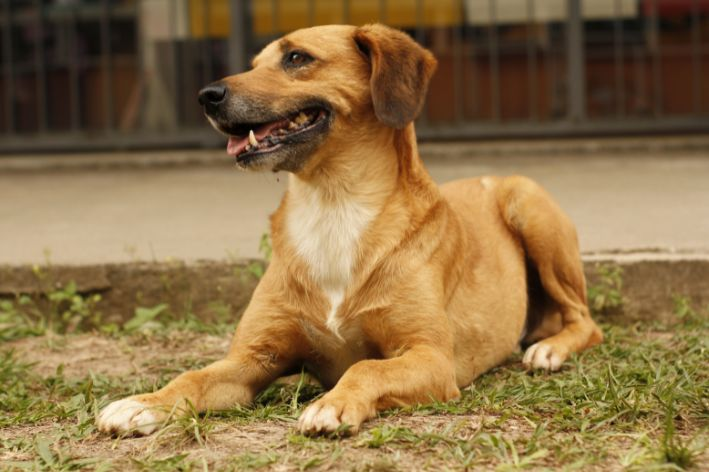

Nossos PETS disponíveis para adoção
Conheça nossos amigos de quatro patas que estão em busca de um lar cheio de amor. A adoção possui uma pequena taxa simbólica para ajudar na manutenção da ONG e no cuidado de outros animais resgatados.
| Imagem | Nome | Idade | História |
|---|---|---|---|
|  | Jorge | 5 anos | Jorge é um caramelo muito brincalhão e cheio de energia. Adora correr atrás da bolinha e receber carinho na barriga. Precisa de uma família que goste de passeios e brincadeiras ao ar livre. |
 |
Marina | 4 anos | Marina é uma cadela muito forte e carinhosa. Foi resgatada de situação de abandono, mas nunca perdeu a doçura. Ama crianças e se dá bem com outros cães. |
 |
Orelinha | 2 anos | Orelinha é cheio de vida e adora brincar. Ganhou esse nome por causa de sua orelha levantada que encantam a todos. É um ótimo companheiro para quem busca alegria e amizade fiel. |
 |
Joana | 6 anos | Joana é uma cadela calma e muito dócil. Ideal para quem procura um pet tranquilo e carinhoso. Gosta de cochilar ao sol e receber cafuné. |
 |
Mário | 9 anos | Mário é um cãozinho idoso, mas cheio de amor para dar. Foi resgatado após anos de abandono e agora sonha com um lar acolhedor para passar sua melhor fase de vida com conforto e carinho. |